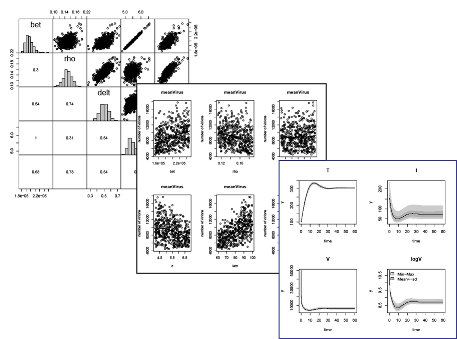

|
|
 |
FME - Calibration, Sensitivity and Monte Carlo Analysis in R
'FME' is an add-on package for the open source data analysis
system R designed for confronting a
numerical mathematical model with data
What is in FME?
FME contains functions for sensitivity and Monte Carlo analysis, for
parameter identifiability, and for fitting a model to data.
It provides a Markov-chain based method to estimate parameter confidence intervals.
Although its main focus is on mathematical systems that consist of
differential equations, FME can deal with other types of models.
Project web pages
Documentation
Manual and Tutorials
-
The Reference
Manual at CRAN (PDF of help-pages)
-
Tutorial:
Main package vignette
-
Tutorial:
Sensitivity, Calibration, Identifiability, Monte Carlo Analysis and MCMC of a
Dynamic Simulation Model, as solved with differential equation solvers from package
deSolve
-
Tutorial: Sensitivity,
Calibration, Identifiability, Monte Carlo Analysis of a Steady-State Model, as
generated with solvers from package rootSolve
-
Tutorial:
Sensitivity, Calibration, Identifiability, Monte Carlo Analysis of a Nonlinear Model
-
Tutorial:
Tests of the Markov Chain Monte Carlo Implementation
Papers
Soetaert, K. & Petzoldt, T. (2010): Inverse modelling,
sensitivity and Monte Carlo analysis in R using package FME. Journal
of Statistical Software 33(3),
1-28. http://www.jstatsoft.org/v33/i03
Developers
Related Packages
-
deSolve:
General solvers for initial value problems of ordinary differential equations
(ODE), partial differential equations (PDE), differential algebraic equations
(DAE), and delay differential equations (DDE).
-
rootSolve:
Nonlinear root finding, equilibrium and steady-state analysis of
ordinary differential equations.
-
bvpSolve:
Functions that solve boundary value problems (BVP) of systems of
ordinary differential equations.
-
ReacTran: Routines
for developing models that describe reaction and advective-diffusive
transport in one, two or three dimensions.
-
marelac:
Tools, constants and conversions for marine and lacustrine sciences.
-
simecol: An
object oriented framework for structured implementation of dynamic
models.
Mailing list
Discussions about FME can be directed to the mailing list:
r-sig-dynamic-models@r-project.org
This Special
Interest Group for Dynamic Simulation Models in R is a
forum for discussing the use of R for implementation, simulation and
analysis of dynamic simulation models. The list covers differential
equation models as well as other dynamic systems in different
application areas: natural sciences, engineering, economy and many
others.
Date: 2015-08-01